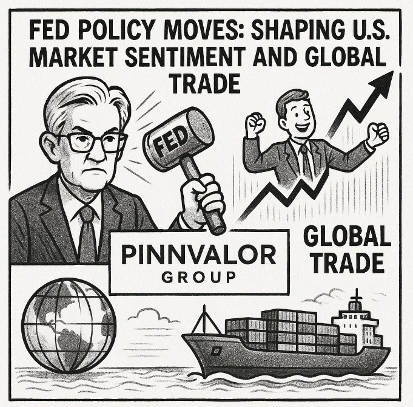

Fed Policy Moves: Shaping U.S. Market Sentiment and Global Trade
In today’s interconnected global economy, few institutions wield as much influence as the United States Federal Reserve. Often referred to simply as "the Fed," this central bank’s monetary policy decisions can cause ripples—sometimes waves—through U.S. financial markets and international trade dynamics. From interest rate shifts to balance sheet adjustments, every move by the Fed is closely scrutinized for its potential impact on investor sentiment and cross-border commerce.
Can a single move by the Fed shift market sentiment and reshape global trade flows?
The Federal Reserve may act with a domestic mandate, but its impact knows no borders—reshaping trade balances, shifting capital flows, and stirring markets across continents.
Understanding the Fed’s Role in Monetary Policy
The Federal Reserve's core responsibilities include managing inflation, maximizing employment, and maintaining financial stability. It achieves these goals primarily through:
- Setting the federal funds rate: The interest rate at which banks lend to each other overnight.
- Open market operations: Buying or selling government securities to influence liquidity.
- Quantitative easing or tightening: Adjusting its balance sheet to expand or contract money supply.
These tools allow the Fed to either stimulate or cool down the economy, depending on prevailing conditions.
Market Sentiment: A Real-Time Response Mechanism
Investor psychology is closely tied to Fed communications. Even before a policy decision is made, forward guidance—the Fed’s projections and public statements—can shift expectations and prompt market movements.
Rate Hikes and Market Volatility
When the Fed raises interest rates:
- Borrowing becomes more expensive.
- Consumer and business spending typically slows.
- Valuations in equity markets often decline, especially in growth and tech sectors.
This can lead to short-term volatility as markets adjust to the tighter financial conditions.
Rate Cuts and Risk Appetite
Conversely, rate cuts or dovish signals from the Fed tend to:
- Lower the cost of capital.
- Stimulate investment and consumption.
- Boost equity markets, particularly risk assets.
Investors often respond with increased risk appetite, bidding up prices of stocks, high-yield bonds, and commodities.
Global Trade: The Fed's Indirect Lever
Although the Fed doesn’t set global trade policy, its influence on the U.S. dollar, interest rate differentials, and capital flows affects international commerce significantly.
Currency Movements and Trade Balances
A higher interest rate environment in the U.S. strengthens the dollar as investors seek better returns. While a strong dollar:
- Benefits U.S. importers by making foreign goods cheaper,
- It can hurt U.S. exporters, whose products become more expensive overseas, worsening trade balances.
On the flip side, a weaker dollar (often resulting from Fed easing) enhances U.S. export competitiveness but can increase the cost of imports and contribute to inflationary pressures.
Emerging Markets and Capital Flows
Fed policy also impacts emerging market economies:
- Tightening in the U.S. can trigger capital outflows from these regions, leading to currency depreciation and financial stress.
- Loosening encourages capital inflows, often inflating asset bubbles in search of yield.
This dynamic underscores the Fed’s global reach, despite its domestic mandate.
Recent Context: Navigating Post-Pandemic Uncertainty
In the wake of the COVID-19 pandemic, the Fed deployed unprecedented easing measures—slashing rates to near-zero and expanding its balance sheet dramatically. While this helped avoid a deep recession, it also contributed to surging inflation.
In response, the Fed shifted to aggressive tightening in 2022–2023. The market saw significant volatility, with sectors like tech and real estate bearing the brunt. Globally, many economies felt the pinch as the strong dollar strained foreign debt obligations and suppressed trade.
As of 2025, the Fed has taken a more nuanced stance, balancing inflation risks with the need to avoid a sharp economic slowdown. Market participants now hang on every word from the Fed for clues about future direction—highlighting the continued sensitivity of sentiment and trade to monetary policy.
Conclusion: Watching the Fed—Because the World Does Too
The Federal Reserve’s decisions reverberate far beyond Washington, D.C. While primarily focused on the U.S. economy, its policy actions influence global markets, shape investment behavior, and alter trade flows. For investors, businesses, and policymakers alike, understanding the Fed’s moves is not just important—it’s essential.
Whether you're tracking interest rates, managing an international supply chain, or simply monitoring your investment portfolio, staying attuned to the Fed’s policy signals offers critical insight into the broader economic landscape.